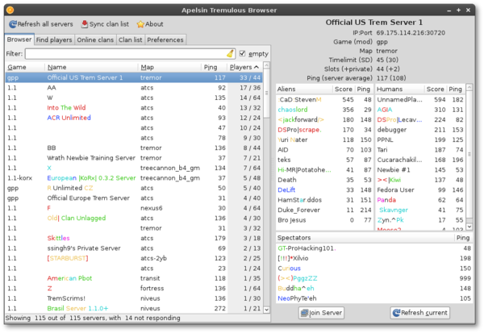

“Apelsin is the latest state-of-the-art in server browser technology. Precision engineered with hand crafted military grade secure Haskell-code, you'll learn to love the simple, responsive and bug free browser. Best of all — it's free.”— Questionably independent reviewer, Jan 2013
Apelsin Tremulous Browser
Apelsin is a two-paned, open source, server- and clan browser. It shows servers and players from Tremulous 1.1, Tremulous GPP and Unvanquished at the same time. Refreshing all servers should take about 1‒2 seconds depending on your connection. The only dependencies are gtk2 and gmp. Apelsin typically uses about 14MiB RAM. License: GPL3 Written in: Haskell
Download
Download version 1.2.3 for your operating system:Arch Linux
Install apelsin from the AUR. See aur.archlinux.org/packages/apelsin.
Ubuntu and derivatives (like Mint)
Install it from the PPA:
sudo add-apt-repository ppa:christoffer-k/apelsin
sudo apt-get update && sudo apt-get install apelsinWindows
Use the installer: apelsin-setup-1.2.3.exe
Note: You will have to download new releases manually.

Install from hackage
You can also build Apelsin from source on any OS, including Mac OS X. Fist, install The Haskell Platform (2013.2+ required), and then run the following:
cabal update
cabal install apelsinFeatures
- Fuzzy search matching everything (
-excludes) - Server browser
- Find players
- Online clan members
- Synchronized clan list
- Optional auto-refreshing of servers
You can change the ratio between the panes by dragging the handle in the middle.
Clan list
The clan list is by default synced against the DDOS server on startup. As the list has a historical value, no clans will be removed.
Add or update clan entries:
Keyboard shotcuts
- Ctrl+R or F5:
- Refresh all servers
- Ctrl+S or F6:
- Sync clan list
- F7:
- About
- Ctrl+L or Ctrl+F:
- Focus Input
- Alt+[1-5]:
- Switch tab
Source code
- Apelsin:
git://github.com/Cadynum/Apelsin.git - tremulous-query:
git://github.com/Cadynum/tremulous-query.git - Apelsin on GitHub
Author
- Developer
- Christoffer Öjeling <christoffer@ojeling.net>
- Contributors
- DDOS ddos-tremulous.eu

{kind=link}